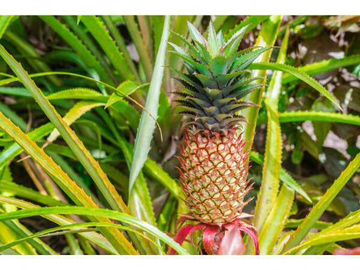

Ananas comosus
Common Names: Pineapple, Ananas
Local Name: Annanasi (Tamil), Ananas (Hindi), Kaitha Chakka (Malayalam)
Family: Bromeliaceae
Origin: South America (Brazil and Paraguay)
Plant Type: Perennial bromeliad herb
Variety: Kew, Queen, Mauritius, MD-2 (Golden Sweet)
Average Lifespan: 3–5 years; ratoon crops extend productive life
| Growth Habit | Rosette-forming terrestrial bromeliad; produces suckers and ratoons |
| Plant Size | 1–1.5 meters tall; 1–1.5 meters spread |
| Leaves | Long, sword-shaped, 60–100 cm, waxy, often with spiny margins; grey-green to dark green |
| Flowers | Small, purple-blue, borne on a central spike; each flower develops into a fruitlet |
| Fruit | Compound fruit (syncarp) formed from fused fruitlets; 1–2 kg; cylindrical to oval |
| Fruit Color | Green when unripe, yellow-orange when ripe; flesh pale yellow to golden |
| Root System | Shallow, fibrous; also has aerial roots on stem; drought-tolerant once established |
| Climate | Tropical and subtropical; tolerates drought |
| Temperature Range | 20–30°C ideal; tolerates 10–38°C |
| Rainfall Requirement | 1000–1500 mm annually; drought-tolerant due to CAM photosynthesis |
| Soil Type | Well-drained sandy loam; cannot tolerate waterlogging |
| Soil pH Preference | 4.5–6.5; prefers slightly acidic soil |
| Sun Requirement | Full sun (6–8 hours daily) |
| Spacing | 30–45 cm between plants; 90 cm between rows |
| Irrigation Method | Drip irrigation; moderate watering; avoid waterlogging |
| Water Requirement | Low to moderate; very drought-tolerant |
| Can it Grow in Pots? | Yes, in large containers (20+ liters); popular as ornamental-fruiting plant |
| Fertilizer Schedule | Every 2 months; high potassium for fruit development |
| Recommended Organic Fertilizers | Compost, wood ash, neem cake, fish emulsion |
| Pesticide Frequency | As needed; monitor for mealybugs |
| Recommended Organic Pesticides | Neem oil for mealybugs; soap spray for scale insects |
| Mulching Practice | Black polythene mulch or organic mulch to suppress weeds and retain moisture |
| Common Pests | Pineapple mealybug, scale insects, nematodes |
| Common Diseases | Heart rot (Phytophthora), root rot, fruitlet core rot |
| Disease Prevention & Remedies | Excellent drainage; avoid overwatering; use disease-free planting material |
| Flowering Months | Can be induced year-round; naturally flowers after 12–18 months |
| Fruiting Season | Fruit matures 5–6 months after flowering |
| Days to Harvest | 150–180 days from flowering |
| Harvest Indicators | Skin turns yellow from base; sweet aroma; eyes flatten; slight softness at base |
| Average Yield per Plant | 1–2 fruits per plant per year; ratoon crops continue for 3–5 years |
| Pollination Type | Self-incompatible; commercial varieties produce seedless fruit without pollination |
| Propagation by Cuttings | Crown (top), slips (side shoots), or ratoons (basal suckers); crown takes 18–24 months to fruit |
| Propagation by Seeds | Rarely used; commercial varieties are seedless |
| Water Usage | Very low; CAM photosynthesis allows water storage in leaves |
| Companion Plants | Legumes, sweet potato (ground cover), marigolds |
| Biodiversity Benefits | Flowers attract hummingbirds and bees; dense rosettes provide ground habitat |
| Commercial Production Regions | Costa Rica, Philippines, Brazil, Thailand, India (Assam, West Bengal, Kerala) |
| Market Uses | Fresh fruit, juice, canned slices, dried pineapple |
| Processing Uses | Juice, jam, vinegar, bromelain enzyme extraction, textile fiber from leaves |
| Market Value (Approx.) | ₹30–80 per fruit in India; varies by size and season |
| Symbolism | Symbol of hospitality and welcome in many cultures; introduced to Europe by Columbus in 1493 |
| Traditional Uses | Fruit eaten fresh and in cooking; unripe fruit used as meat tenderizer; leaves used for fiber (piña fabric in Philippines) |
| Calories | 50 kcal per 100g |
| Dietary Fiber | 1.4 g per 100g |
| Vitamin C | 47.8 mg per 100g (80% DV) |
| Potassium | 109 mg per 100g |
| Antioxidants | Rich in flavonoids, phenolic acids, and beta-carotene |
| Other Key Nutrients | Bromelain enzyme, manganese, thiamine, folate |
| Digestive Health | Bromelain enzyme aids protein digestion; used for bloating and indigestion |
| Anti-inflammatory Properties | Bromelain has significant anti-inflammatory and analgesic properties |
| Immune Support | High vitamin C content boosts immunity; antioxidants protect cells |
Disclaimer: Information provided is for educational purposes only and not a substitute for medical advice.
Add your field observations here.